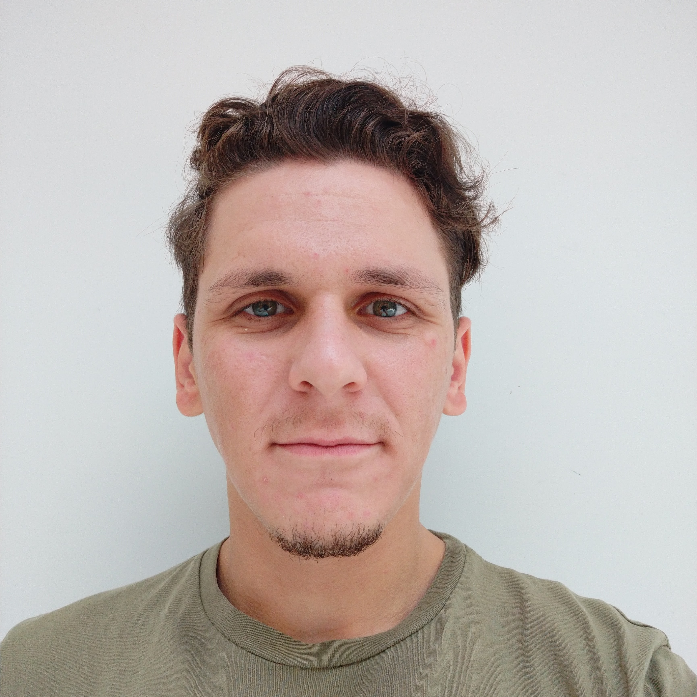

|
Burhan Karahasan I'm a mechanical engineering & electrical and electronics engineering student at Koc University in Istanbul. |
 |
{kind=link}
ResearchDuring the COVID-19 pandemic, I joined Professor Lazoglu's research team in Manufacturing and Automation Research Center to develop a mechanical ventilation device. My contributions included co-authoring a paper on enhancing the accuracy of the closed-loop controller through wireless sensor integration (refer to my publications), further solidifying my research capabilities. This experience also allowed me to hone my skills in prototyping electronic and software components, expanding my knowledge of sensor fusion and communication protocols. Currently, I am engaged in an independent research project with Professor Lazoglu, focusing on the development of a robotic guidance system for brain biopsies. Our goal is to streamline the surgical procedure, enabling surgeons to precisely insert the biopsy needle without causing damage to blood vessels or sensitive brain regions. In the preliminary stages, I successfully extracted critical information from an MRI scan using open-source tools and generated entry paths on phantom models with mm-level accuracy, matching the standard for minimally invasive surgeries. I utilized MathWorks Robotics Systems Toolbox for trajectory generation although I would learn any other tool if necessary. Optimizing the entry path, whether linear or nonlinear, from a multitude of possible solutions poses a significant challenge. To address this complexity, I reformulated the problem as a convex optimization task, seeking the most efficient and effective solution. For MRI-to-patient registration, I adopted a two-stage approach, combining the Procrustes Method and ICP algorithm. Currently, I develop a certifying algorithm to circumvent local convergence issues. Throughout this endeavor, I leveraged both MathWorks Computer Vision Toolbox and open-source software packages for point cloud registration. Our research might help surgeons to achieve operations with much less mental and physical effort. |
 
|
A novel real-time wireless sensor integration for enhancing positive pressure system operation in single limb passive vented circuit
Munam Arshad, Eda Guven, Burhan Karahasan, Ismail Lazoglu BSPC, 2023 (Spotlight) bibtex A novel real-time wireless pressure and flow sensor control system enhances the performance of a single limb passive vented circuit for non-invasive ventilatory support. |